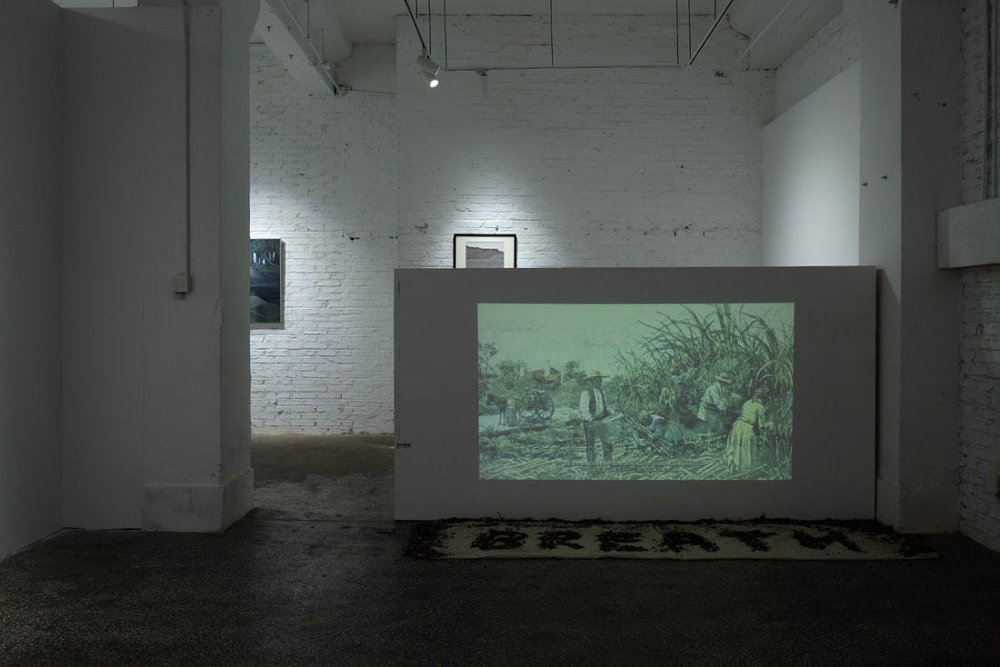

ARTWORKS
Herbary: Co-respiration
Stills

Introduction
Taking place in a makeshift site with hallucinogenic effects and herbal odours, Herbary: Co-respiration aims to portray the inextricably entangled relationship between herbs and human political and cultural processes through the lens of pantheistic ritual. By examining and introducing folkloric herbs with potential healing powers for neurodegenerative diseases, the work links local herbal knowledge that resists forgetting to oral memory in the face of collective catastrophe. The throwing of medicinal dregs as a traditional ritual heralds the receding of disease and the ability of members of a community to bless one another. Common breathing is given the energy to break out and reinscribe itself in public memory: ritual becomes a recipe for collective healing that points toward the receding of plague while attempting to soothe the lasting cultural trauma left by the violent prohibition of breathing and enforced forgetting.
Herbary: Co-respiration reconstructs and highlights a series of botanical-anthropological images of hybridity and symbiosis in a digital environment, directing participants' attention to the commonality and necessity of plant respiration. Inspired by Indigenous shamanic prayers about nature and plants, the artist drafted an ode to the healing of forgotten herbs, accompanied by atonal music, in an attempt to portray the pervasive power of herbs in human history. Participants are encouraged to rediscover the porous nature of the body by attending to their own breath and the breath of others: the exchange of fluids brought about by breathing, together with atmospheric water, points to an entanglement based on the hydrocommons; a polytonal ecology that cuts across multiple senses, blurring the boundaries between the body's interior, exterior, and atmosphere, and signalling an inseparable, interdependent cross-population alliance.
Installation Views


Exhibition List
Review (Selected)
“... On the wooden floor under the curtain is placed Herbary: Co-respiration. The aroma of herbs rises slowly from the wooden floor and fills the space. The concept of this work coincides with the concept of ‘mind technology’ ... Scent is part of this technology, and Herbary: Co-respiration utilizes the Proust effect to remind the audience of the ‘pharmacy’ when they smell the herbs, thus awakening the concept of ‘healing’ and related memories ... Looking up at the healing images and smelling the hallucinogenic herbal gas, the two mediums of smell and sound carry our wish to dispel illness and pursue happiness, and at this moment, the healing effect reaches its peak.”
— Wang Yu, Under Disorder, the Prayer of the Ages